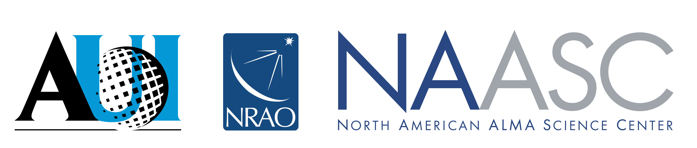

Identifying and Bridging
Gaps in Laboratory
Astrophysics Workshop II
Gaps in Laboratory
Astrophysics Workshop II
January 3-4, 2026
247th AAS Meeting, Phoenix, AZ
247th AAS Meeting, Phoenix, AZ
| Home | Registration | Program | White Papers |
The two day Identifying and Bridging Gaps in Laboratory Astrophysics Workshop will be held January 3-4, 2026, ahead of the Winter AAS meeting in Phoenix, AZ.
This workshop directly addresses a key recommendation from the Laboratory Astrophysics Task Force (LATF) convened by the AAAC in response to the Astro2020 Decadal Survey.
Four key-science themes from the Astro2020 decadal will guide the workshop agenda:
Planetary Atmospheres & Biosignatures
This topical area includes laboratory measurements and ab initio investigations relevant to atmospheric opacities, aerosol formation,
and chemical reaction kinetics at a broad range of temperatures, pressures, and radiation environments.
Stars/Stellar Evolution and Planet Formation
This topical area includes laboratory measurements of gas-phase reactions, ice-phase chemical & microphysical processes, and spectroscopy/optical
properties of gasses, ices, and dust spanning the millimeter to IR.
High-Energy/Time-Domain
This topical area includes laboratory measurements of nuclear reaction rates, atomic opacity and electron-impact collision calculations, measurements
of low-temperature dielectronic recombination rate coefficients, radiation transport, radiation hydrodynamics, and hydrodynamic instabilities relevant
to the environments of supernova explosions, accreting black holes, and neutron star mergers.
Diffuse Media: Gas, dust and beyond
This topical area includes observations and laboratory astrophysical studies of interstellar and intergalactic media, interstellar clouds,
interstellar dust and ices, and the formation of molecules in these environments.
The workshop will gather laboratory astrophysics researchers and stakeholders to discuss current needs, foster collaboration, and generate white papers outlining community priorities for the mid-Decadal review. Activities will include overview talks, breakout discussions, poster sessions, and networking opportunities, with a focus on building interdisciplinary connections. Furthermore, the workshop’s outcomes will support NSF and NASA’s goals of aligning laboratory astrophysics with mission priorities, ensuring that federal investments in major facilities and missions are leveraged to their fullest potential.
Nikole Lewis (co-chair, Cornell University)
Stefanie Milam (co-chair, NASA Goddard)
Jenny Bergner (UC Berkeley)
Kyle Crabtree (UC Davis)
Carolyn Kuranz (University of Michigan)
Joan Marler (Clemson University)
Brett McGuire (MIT)
Randall Smith (CfA/SAO)
Clara Sousa-Silva (Bard College)
Mike McCarthy (ex-officio, CfA/SAO)
|  |
|
The workshop is supported by grants from NSF and NASA and sponsored by the North American ALMA Science Center (NAASC)